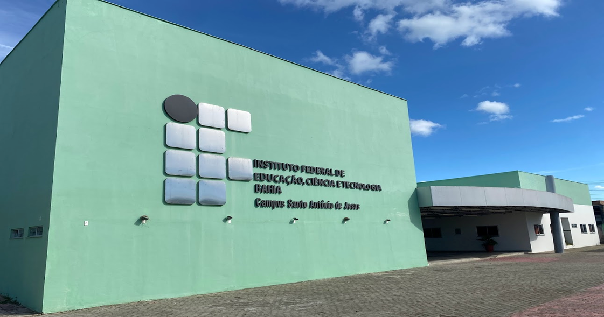
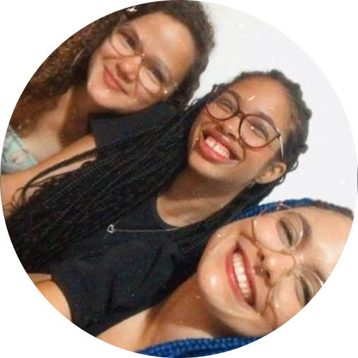

Sobre
O Ifba de Santo Antônio de Jesus foi inaugurado no ano de 2016, com o intuito de promover ensino de qualidade nas áreas tecnológicas. Suas atividades foram originadas ofertando cursos de Formação Inicial e Continuada. No segundo semestre de 2018, foram iniciados os cursos de ensino superior, que são: Análise de desenvolvimento de Sistemas, Rede de Computadores e Produção Multimídia.
A instituição acolhe mais de 550 alunos, vindos de Santo Antônio de Jesus e região. Os alunos têm a oportunidade de ingressar através do Sisu (Sistema de Seleção Unificada) e do Processo Seletivo realizado por meio de uma análise escolar. Os cursos superiores são ministrados no período da noite, e o ensino médio integrado, que inicia no ano de 2023, será promovido no período matutino.
O Ifba vem dando oportunidades de crescimento tanto para alunos quanto para os professores, que sempre demonstram muita satisfação em fazer parte da instituição. Um exemplo é o Professor e Doutor em Estudos Linguísticos Fabrício da Silva Amorim, que diz: “Fazer parte do IFBA como um professor efetivo é algo muito honroso, e quando eu utilizo adjetivo honroso eu de fato quero dizer que é uma honra trabalhar no Instituto Federal, porque tanto IFBA quanto o IFbaiano, que são os institutos federais que nós temos aqui em território baiano, quanto todos os outros de norte a sul do do do país oferecem uma educação de altíssima qualidade, além de ser um ensino totalmente gratuito.”
Entrevistas

Andrea Barreto BorgesProfessora e Mestre em Cultura, Memória e Desenvolvimento RegionalO IFBA é uma instituição centenária que tem uma contribuição muito vasta na Bahia ao longo desses anos. E estando aqui em Santo Antônio de Jesus pode contribuir também com o desenvolvimento das pessoas, e por meio da educação essas pessoas podem ter uma condição de vida melhor.Ver entrevista completa |

Késsia Evelly Campos SouzaAluna do curso de Produção Multimídia 2018.2Fazer parte da instituição pra mim foi e tá sendo fundamental não só enquanto profissional mas enquanto cidadã também, porque a gente aprende valores,a gente não tem só um ambiente acadêmico dentro do Instituto Federal da Bahia, nós aprendemos valores em questão das razões sociais em si.Ver entrevista completa |
Fabrício da Silva AmorimProfessor e Doutor em Estudos LinguísticosEu não tenho dúvidas de que o meu ingresso no Instituto Federal da Bahia me permitiu realizar sonhos. Tanto na dimensão profissional quanto na dimensão pessoal.Ver entrevista completa |

Val MalocaEx-aluno e Produtor AudiovisualMe apresentou pessoas importantes para minha trajetória, que me deram oportunidades que eu pude trabalhar junto e assim caminhar e conseguir evoluir dentro do que eu faço pra hoje eu ter uma produtora e conseguir além de continuar trabalhando com essas pessoas, fechar meus próprios trabalhos e expandir cada vez mais meu horizonte nesse sentido.Ver entrevista completa |

Fernando de Oliveira LeãoProfessor e Especialista em Novas Mídias, Rádio e TVEntão essa é pra mim uma importância muito grande de compreender que esses institutos são muito importantes na formação de vários alunos e alunas pelo país inteiro nas diversas modalidades e também nos diversos cursos que são oferecidos como aqui em Santo Antônio de Jesus.Ver entrevista completa |
Josiane Santos Pereira e SantosEstagiária e ATFazer parte do IFBA, a primeira palavra que me vem à cabeça é enriquecedor.(...)Então eu consigo crescer, amadurecer e desenvolver em outras esferas que não seja apenas a psicologia, além da oportunidade de ter contato não apenas com os discentes, com os alunos, mas também com o corpo docente da instituição.Ver entrevista completa |

Karla Reuter Dos ReisAssistente SocialO IFBA, acredito ter um papel social, econômico e cultural relevante, para que a população possa ter acesso a uma educação de qualidade, trazer uma realidade concreta quando se oferta o ensino superior, principalmente pra aquela comunidade que é mais carente que não tem como bancar uma faculdade particular.Ver entrevista completa |
Importância
Para nós, discentes do curso de Produção Multimídia do IFBA, é de extremo orgulho e honra, pois podemos aprender a desenvolver múltiplas áreas de conhecimento e nos profissionalizarmos para atuação no mercado de trabalho. E assim afirmamos que o IFBA campus Santo Antônio de Jesus foi, é e será sempre importante em nossas vidas.
Emilly Monique, Jayele Moura e Thaíse Leal
{kind=link}
{kind=link}
{kind=link}
{kind=link}
{kind=link}
{kind=link}

Olá, somos Emilly Monique, Jayele Moura e Thaíse leal, estudantes do IFBA campus Santo Antônio e produzimos essa revista online com o intuito de apresentar a importância do campus para a cidade e região.
Agradecemos a todos que contribuíram com a revista online!